Made in Tripo
The levels are finished and playable. What the game needs next is its cast: every rider, mount, rival ace and landmark. That's the job for Tripo. These are our first generations, from our own concept art:
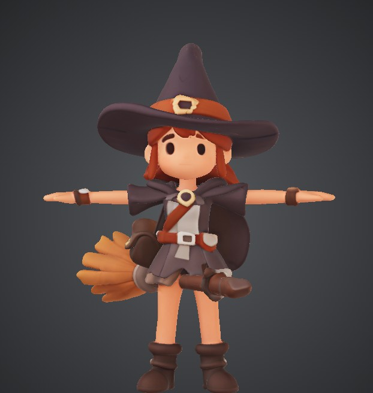
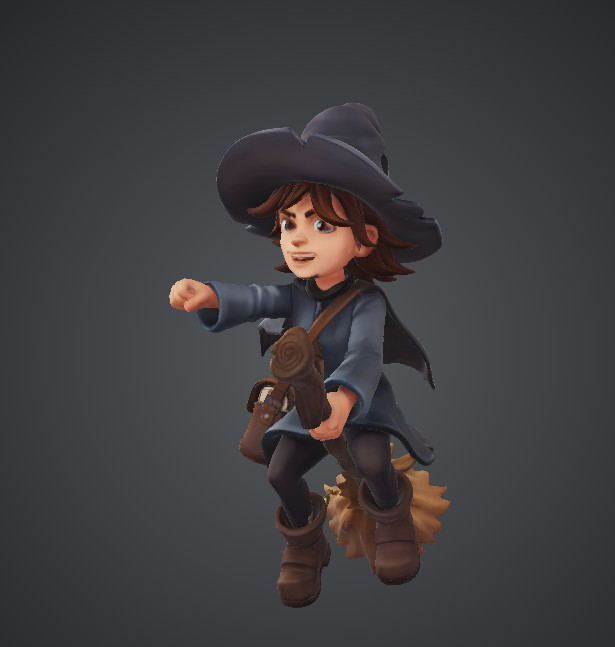
Why Tripo fits this game
- Sixteen mounts that must read by shape alone. Four factions (mages, wraiths, dwarven machines, dragons) each fly four classes: Swift, Lancer, Bulwark and Hexer. Multi-view generation keeps each silhouette true from the chase camera behind.
- Riders and mounts made apart. Smart segmentation and rigging let any rider sit any mount, and the game animates them: banking, bobbing, flinching.
- Straight into Godot. A scripted pass fits every model to the game's budget and palette, so a batch goes from Tripo to flying in a level the same day.
The game, today
Thirteen seconds of the current build: the run in on Glassreach, a garrison binding a lock, a seeker inbound and a wardspark thrown. The rider here is the game's stand-in, built from code primitives; the Tripo cast replaces it.
- 16story missions over three acts, all playable
- 4factions: mages, wraiths, dwarves, dragons
- 16mounts, one shape per faction and class
- 19spells in the grimoire
Lock-on dogfights, a radio drama in your ear and named rival aces. Magic is the ammunition: every spell spends the same mana as your homing bolts. The story is told backward, through a chronicler's interviews fifteen years after the war with the people who flew with, and against, the mercenary the enemy called the Ashwing.
The ask
About 10,000 credits, or two months of the Pro plan, for the production run.
That covers 78 models at around two attempts each, with multi-view input, rigging for the 28 riders, aces and creatures, and part-based texture fixes. Every model ships in a commercial game.
What Tripo gets back
- 78 Tripo models in one shipped game, in a single consistent art style across a full campaign.
- A post for every batch (five in all): concept, Tripo result and the model flying in the game, shared in Tripo's Discord showcase and the Godot community.
- A public "Tripo to Godot" guide with the open-source (MIT) Blender scripts that fit a Tripo model to a game's budget and palette.
- "Made with Tripo" in the game's credits and on its store page.
Timeline
- Month 1Batches 1 and 2: every rider and mount, then the story cast and rival aces.
- Month 2Batches 3 to 5: units, landmark set pieces and the hangars; the art pass on all 16 missions.
Model roadmap
Every model already has a written prompt, a concept image where one exists, and a slot in the game waiting for it. Made in batches, most-seen first.
| Batch | What | Models |
|---|---|---|
| 1 | Player riders and mounts: mage brooms, wraith forms, dwarven machines and dragons in four classes each | 23 |
| 2 | Story cast and rival aces: Larkspur, Thistle, the Pale King, the Ninefold Choir, Black Heron, Ironbell, the Unbound Five | 18 |
| 3 | Enemy units, vessels and targets: war-sleds, barges, wagons, ward towers, Stormspires, the Crown's anchors | 19 |
| 4 | Landmark set pieces: one hero piece per map, from the lighthouse arch to the Hollow Crown | 15 |
| 5 | Hangar props for the four faction workshops | 3 |
| Total | 78 |
Swift
Light and quick: a lacquered racing broom, a wisp, a gyrocopter, a slim drake.
Lancer
Long and pointed: a spear-tipped broom, a serpent shroud, a biplane, a lance-horned wyrm.
Bulwark
Heavy and armoured: an iron-banded broom, a barrow shroud, a twin-rotor barge, a behemoth.
Hexer
Strange and ornate: a gnarled lantern broom, a crowned wraith, a rune-core tilt-rotor, a runescale wyrm.
The pipeline
- ConceptA flat-coloured sheet with front, side and back views, in the house style.
- TripoMulti-view to 3D, smart segmentation, rigging.
- Blender, scriptedFitted to the game's polygon budget, turned to face forward, colours matched to the house palette.
- GodotDrawn with the game's painted light, so every model sits in the same storybook world.
- ReviewJudged against the style guide in the game before it ships.
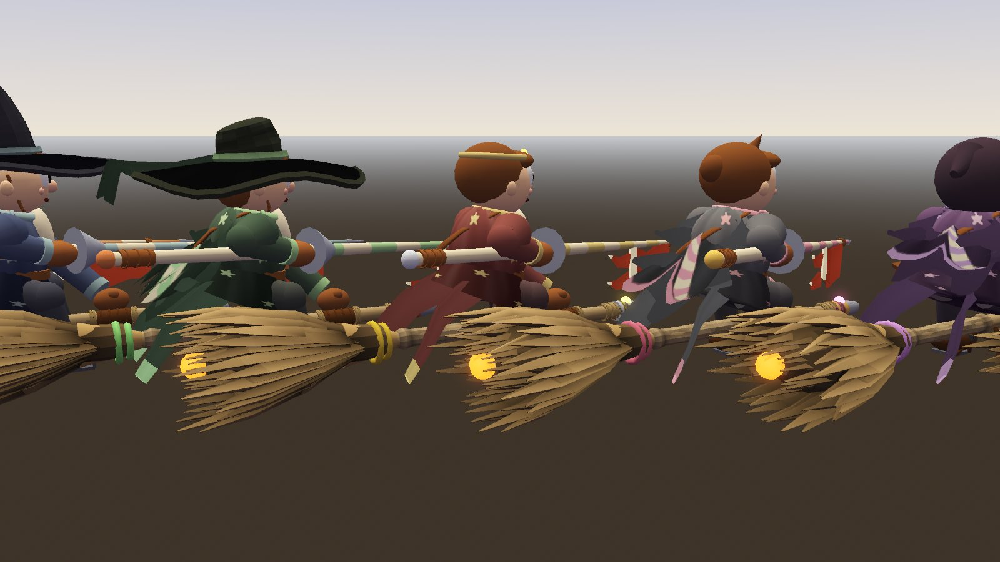
The world they'll fly in
Captures from the current build, taken by the game's own screenshot tests.
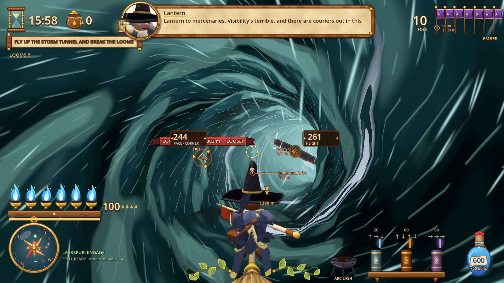
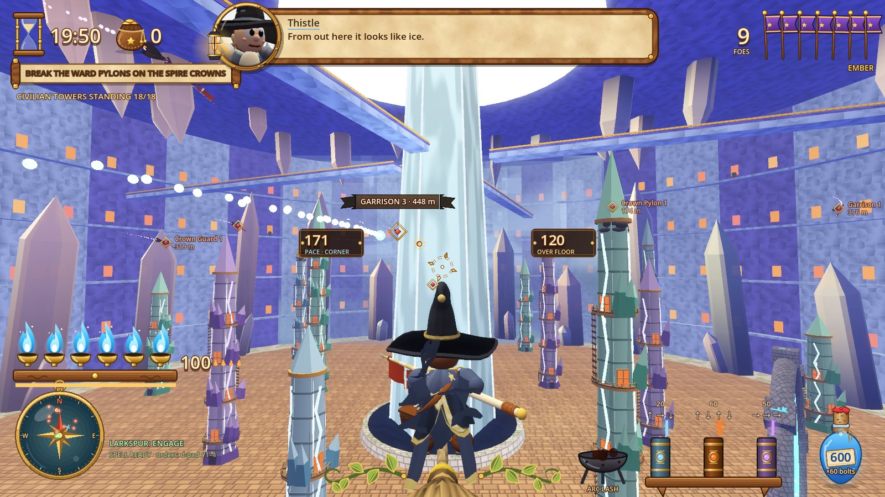
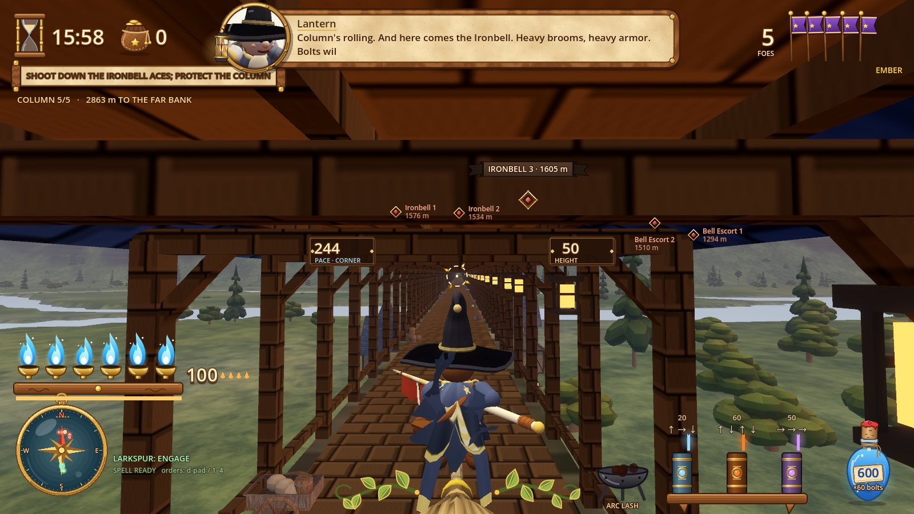
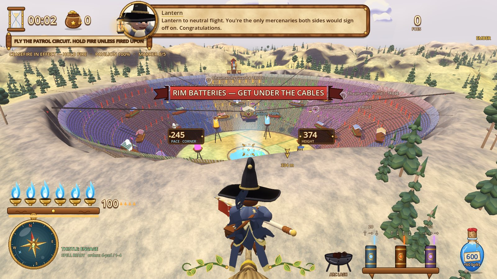
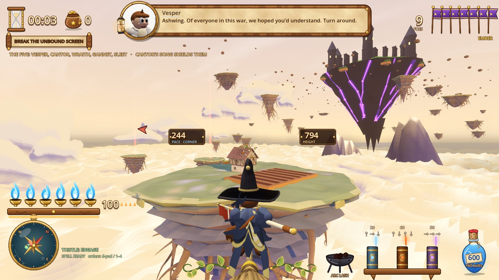
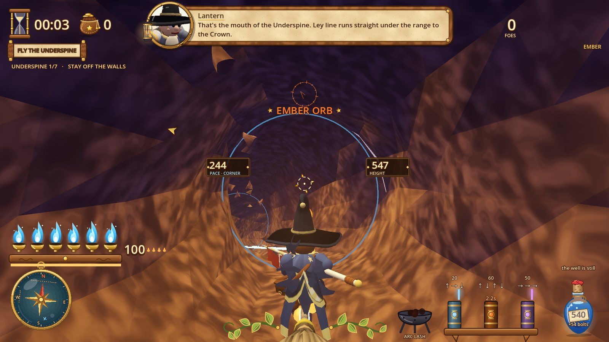
From concept sheet to level
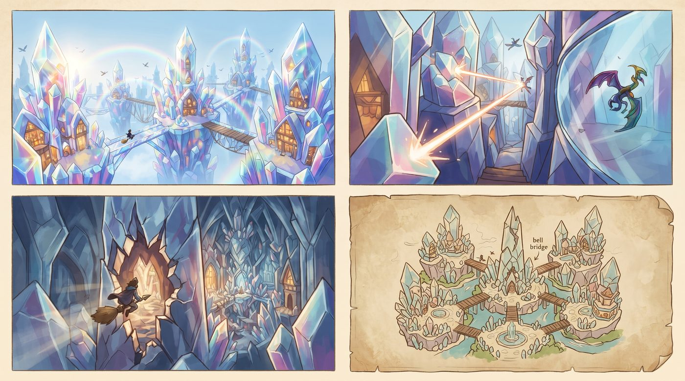
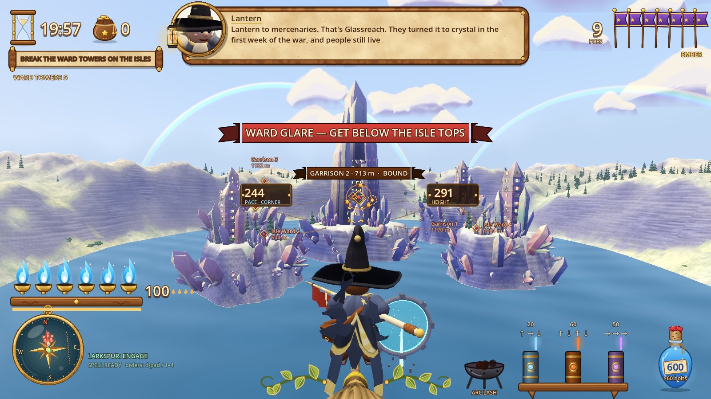
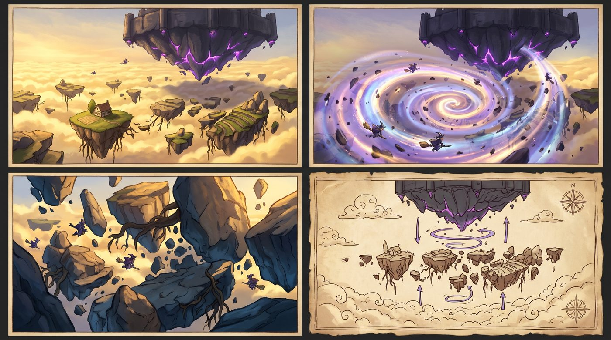
About
Ashwing: Broom Aces is made by Kyle Fenske, solo, in Godot 4. All 16 missions are built and playable end to end; the art is mid-way through the move from greybox to painted storybook, and the cast is the last big piece.
Follow along on GitHub: github.com/fenskek